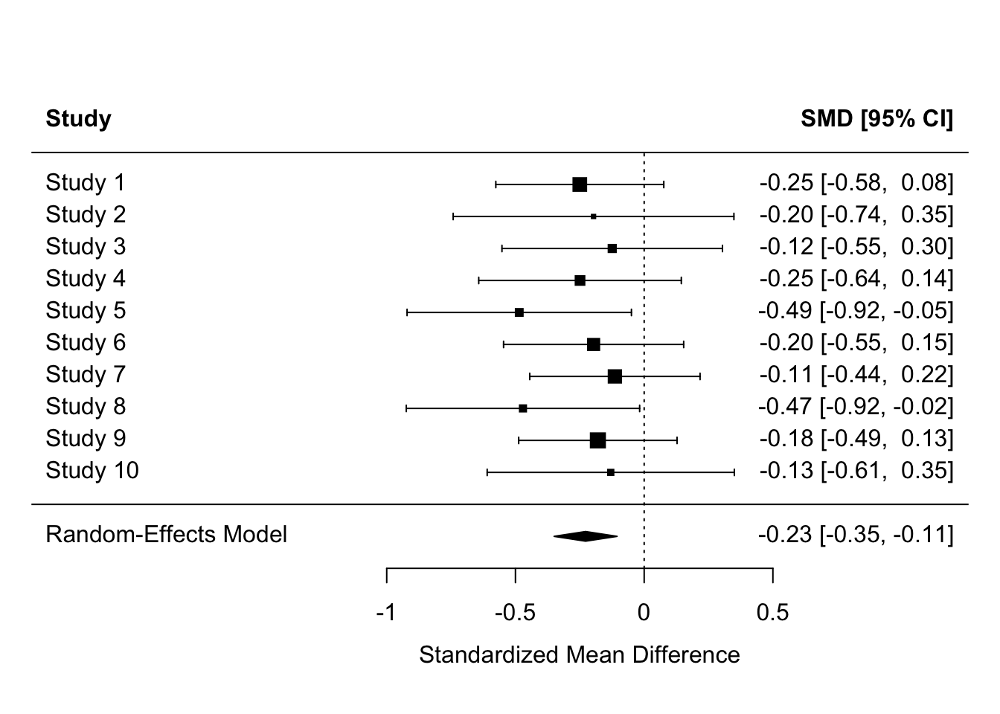
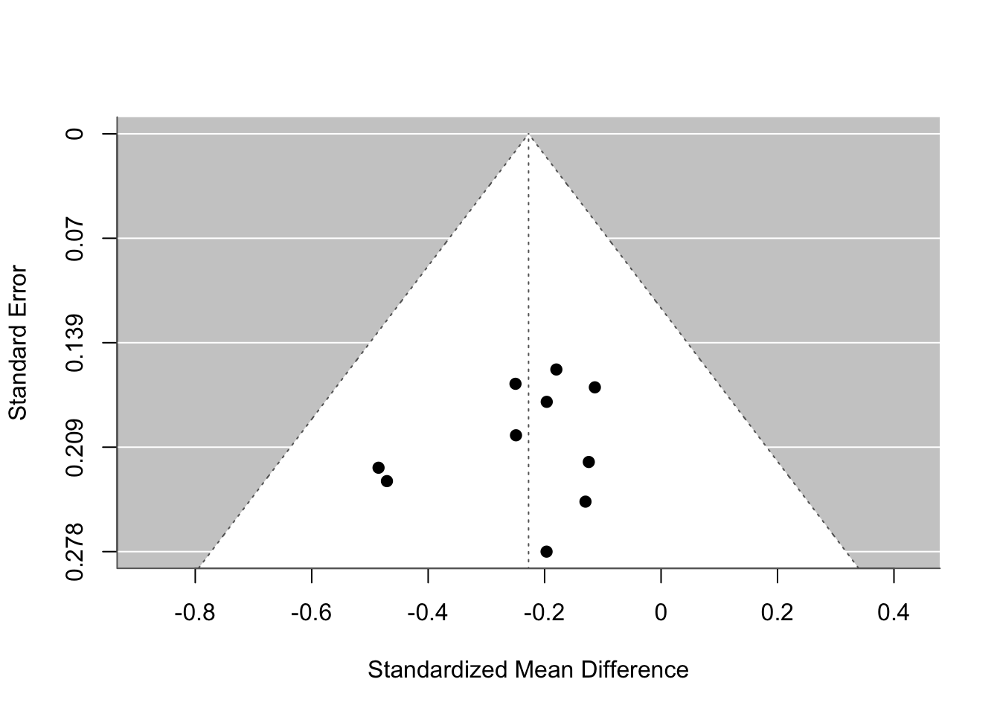

Meta-analysis is a quantitative method for synthesizing results from multiple independent studies to estimate an overall effect size, assess heterogeneity, and explore potential biases.
This example provides a step-by-step guide to conducting a meta-analysis using Jamovi.
We will focus on a meta-analysis of mean differences (e.g., comparing means between two groups across studies). Jamovi uses the MAJOR module for meta-analysis, which is built on the R package metafor. I will provide also the R code to run the same analysis is R.
Step 1: Installing Jamovi and the MAJOR Module
Open Jamovi.
Click the modules icon (top-right, looks like a puzzle piece) and select “jamovi library.”
Search for “MAJOR” and install it.
Once installed, “MAJOR” will appear in the Analyses menu.
Step 2: Preparing Your Data
Meta-analysis requires data from multiple studies, typically including effect sizes or raw statistics to compute them.
We’ll use simulated data for a meta-analysis of mean differences. The data represents 10 hypothetical studies comparing mean scores (e.g., test scores) between two groups (e.g., treatment vs. control).
Simulated Data Generation (R Code)
You can generate this data in R for practice or to create your own datasets. Here’s the R code to simulate the data:
# Install packages if needed# install.packages(c("dplyr", "readr"))library(dplyr)
Attaching package: 'dplyr'
The following objects are masked from 'package:stats':
filter, lag
The following objects are masked from 'package:base':
intersect, setdiff, setequal, union
library(readr)set.seed(42)studies <-paste("Study", 1:10)m1 <-rnorm(10, mean =50, sd =5)sd1 <-rnorm(10, mean =10, sd =2)n1 <-sample(20:100, 10, replace =TRUE)m2 <- m1 +rnorm(10, mean =2, sd =1) # Simulate a positive effectsd2 <-rnorm(10, mean =10, sd =2)n2 <-sample(20:100, 10, replace =TRUE)region <-sample(c("North", "South"), 10, replace =TRUE) # Covariatedata <-data.frame(Study = studies,M1 = m1,SD1 = sd1,N1 = n1,M2 = m2,SD2 = sd2,N2 = n2,Region = region)# Save as CSVwrite_csv(data, "meta_data.csv")
Another dataset with Odds ratios
set.seed(123)studies <-paste("Study", 1:10)event1 <-sample(10:50, 10, replace =TRUE) # Events in treatment groupn1 <-sample(50:100, 10, replace =TRUE) # Total in treatment groupevent2 <-sample(5:40, 10, replace =TRUE) # Events in control groupn2 <-sample(50:100, 10, replace =TRUE) # Total in control groupdata_or <-data.frame(Study = studies,Event1 = event1,N1 = n1,Event2 = event2,N2 = n2)# Save as CSVwrite_csv(data_or, "meta_data_odds_ratios.csv")
This code creates a CSV file (meta_data.csv) with the following structure:
Study: Study name (e.g., “Study 1”).
M1/SD1/N1: Mean, standard deviation, and sample size for Group 1.
M2/SD2/N2: Mean, standard deviation, and sample size for Group 2.
Example data (from the simulation):
View(data)
Copy this into a CSV file or use the R code to generate it.
Step 3: Importing Data into Jamovi
Open Jamovi.
Click “Open” > Browse to your meta_data.csv file.
Ensure variables are correctly typed (e.g., M1, SD1, etc., as Continuous; N1, N2 as Integer; Study as Nominal/Text).
Step 4: Running the Meta-Analysis in Jamovi
Go to Analyses > MAJOR > Mean Differences.
In the analysis panel:
Assign variables:
Group 1: M1 to “Means”, SD1 to “Standard Deviations”, N1 to “Sample Sizes”.
Group 2: M2 to “Means”, SD2 to “Standard Deviations”, N2 to “Sample Sizes”.
Optionally, add “Study” to “Study Labels” for better plot labeling.
Model Options:
Choose “Random Effects” (common for meta-analysis; fixed effects if no heterogeneity expected).
Effect Size: Select “Raw Mean Difference” or “Standardized Mean Difference” (e.g., Hedges’ g).
Additional Options:
Check “Forest Plot” to visualize study effects.
Check “Funnel Plot” to assess publication bias.
Check “Publication Bias” for tests like Egger’s test.
Moderators: If you have categorical or continuous moderators, add them here (e.g. Region).
Click the arrow to run the analysis.
Step 5: Interpreting the Results
Overall Effect: Look at the pooled mean difference, confidence interval, and p-value. A significant positive value indicates Group 2 has higher means.
Heterogeneity: Check I² (percentage of variability due to heterogeneity) and Tau² (variance). High I² (>50%) suggests random effects are appropriate.
Forest Plot: Shows individual study effects and the overall diamond-shaped summary.
Funnel Plot: Symmetry suggests no publication bias; asymmetry may indicate bias.
Publication Bias Tests: Interpret Egger’s or Begg’s test p-values (non-significant = no bias).
For our simulated data, expect a positive overall mean difference around 2, with some heterogeneity.
Step 6: Advanced Features
Explore other MAJOR analyses (e.g., Dichotomous Outcomes for odds ratios, Correlations).
Export results: Right-click on output > Export as image/PDF.
For moderators or subgroups, add variables and select “Moderator Analysis.”
Equivalent R Code for Meta-Analysis
Jamovi’s MAJOR uses metafor under the hood. Here’s the R code to replicate the analysis using the simulated data:
# Install packages if needed# install.packages("metafor")library(metafor)
Loading required package: Matrix
Loading required package: metadat
Loading required package: numDeriv
Loading the 'metafor' package (version 4.8-0). For an
introduction to the package please type: help(metafor)
Random-Effects Model (k = 10; tau^2 estimator: REML)
logLik deviance AIC BIC AICc
4.3076 -8.6152 -4.6152 -4.2208 -2.6152
tau^2 (estimated amount of total heterogeneity): 0 (SE = 0.0176)
tau (square root of estimated tau^2 value): 0
I^2 (total heterogeneity / total variability): 0.00%
H^2 (total variability / sampling variability): 1.00
Test for Heterogeneity:
Q(df = 9) = 3.4536, p-val = 0.9436
Model Results:
estimate se zval pval ci.lb ci.ub
-0.2276 0.0623 -3.6517 0.0003 -0.3497 -0.1054 ***
---
Signif. codes: 0 '***' 0.001 '**' 0.01 '*' 0.05 '.' 0.1 ' ' 1
# Forest plotforest(res, slab = data$Study)

# Funnel plotfunnel(res)

# Publication bias testregtest(res) # Egger's test
Regression Test for Funnel Plot Asymmetry
Model: mixed-effects meta-regression model
Predictor: standard error
Test for Funnel Plot Asymmetry: z = -0.5743, p = 0.5658
Limit Estimate (as sei -> 0): b = -0.0254 (CI: -0.7261, 0.6753)
This code computes Hedges’ g, runs a random-effects model, and generates plots. Adjust measure to “MD” for raw mean differences.
Conclusion
This workshop covers the basics of meta-analysis in Jamovi. Practice with the simulated data, then apply to real datasets. For more advanced topics (e.g., multivariate meta-analysis), explore metafor documentation or additional Jamovi modules.
Resources: - Jamovi User Guide: https://www.jamovi.org/user-manual.html - MAJOR GitHub: https://github.com/kylehamilton/MAJOR - Metafor Package: https://www.metafor-project.org/